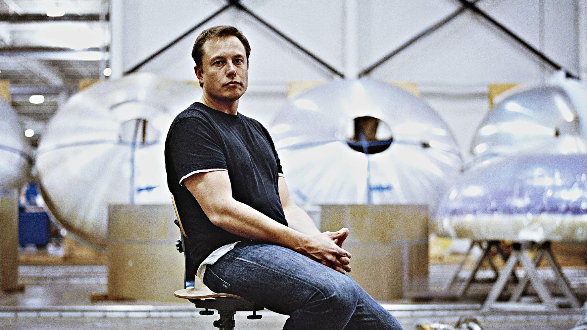

Elon Musk
The man taking us to Mars.

Elon Musk sitting within one of his factories.
Let's walk through the life of Elon Musk:
- 1971 - Born in Pretoria, South Africa.
- 1983 - Musk made his first computer game called Blastar which he sold for $5000.
- 1988 - Musk moved to Canada to attend Queens University and to avert the draft of the South African Military.
- 1992 - Elon left college in Canada and moved to Philidelphia. There, he studied in the University of Pennsylvania where he graduated with a degree in economics. He then stayed for a second bachelors degree in physics.
- 1997 - Musk went to California to get a Ph.D in energy physics but dropped out after two days so that he could launch his first company, Zip2, which sold for over $341 million. Musk also founded X.com, an online financial service which would eventually turn into PayPal.
- 2002 - Musk founded his third company, Space Exploration Technologies Corporation, aka SpaceX. This company is now used to transport cargo to the space station.
- 2003 - Musk helped co-found Tesla Motors, a comany dedicated to producing planet-friendly, affordable, mass-market electric vehicles.
- July 2016 - Neuralink was founded; a corporation developing implantable brain-machine interfaces. The Boring Company was also founded; an American infrastructure and tunnel construction services company.
“Failure is an option here. If things are not failing, you are not innovating enough.”
-- Elon Musk